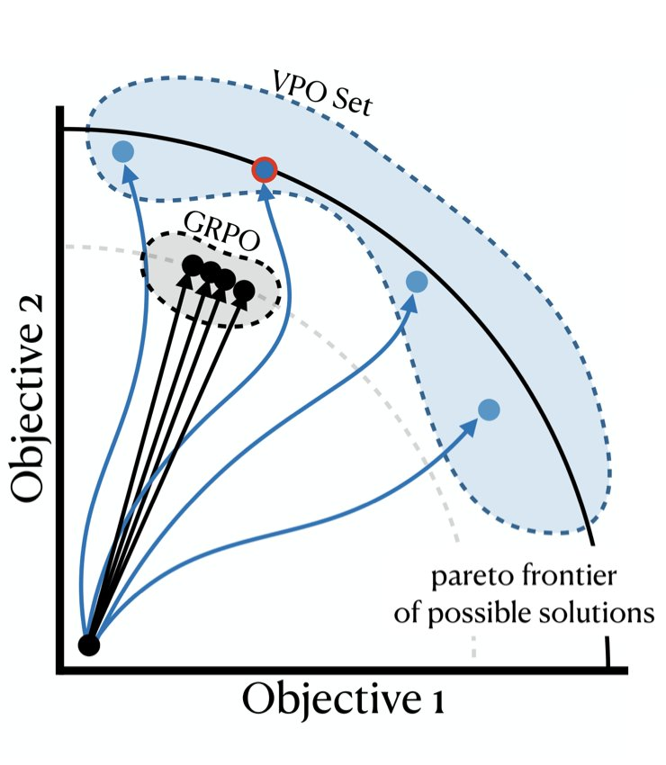
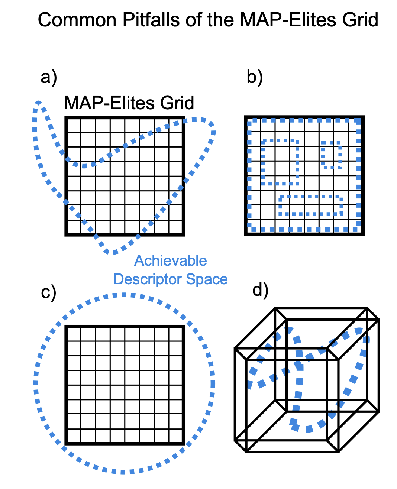
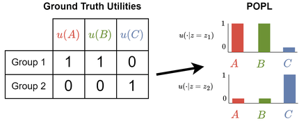

|
Ryan Bahlous-Boldi
(bah-LOOSE BOWL-dee)
I'm a PhD student at MIT working on open-ended and continual learning. Most machine learning commits early, optimizing one fixed objective and converging onto a single solution. I'm interested in the opposite: systems that stay non-committal, keep exploring, and let what matters emerge rather than fixing it ahead of time. My work draws on reinforcement learning, evolutionary computation, and artificial life.
I am advised by Pulkit Agrawal in the Improbable AI Lab. Previously, I was an undergrad at UMass Amherst advised by Lee Spector and Scott Niekum. I've also had the pleasure of collaborating with Stefanos Nikolaidis at USC and Katia Sycara at CMU.
My work is supported by the NSF Graduate Research Fellowship.
CV /
Scholar /
GitHub /
Twitter /
Publications /
Blog
Email: ryanbb [at] mit [dot] edu
|
|
|

|
Vector Policy Optimization: Training for Diversity Improves Test-Time Search
Ryan Bahlous-Boldi, Isha Puri, Idan Shenfeld, Akarsh Kumar, Mehul Damani, Sebastian Risi, Omar Khattab, Zhang-Wei Hong, Pulkit Agrawal
arXiv preprint, 2026
PDF
TL;DR: We propose Vector Policy Optimization (VPO), a drop-in replacement for the GRPO advantage estimator that trains LLMs to produce diverse sets of solutions specialized to different trade-offs in a vector-valued reward space, improving test-time search (pass@k, best@k) and unlocking problems evolutionary search cannot otherwise solve.
|
|

|
Dominated Novelty Search: Rethinking Local Competition in Quality-Diversity
Ryan Bahlous-Boldi*, Maxence Faldor*, Luca Grillotti, Hannah Janmohamed, Lisa Coiffard, Lee Spector, Antoine Cully
GECCO 2025, 2025
PDF /
DOI
TL;DR: We propose a new class of quality-diversity algorithms that are simply genetic algorithms with fitness augmentations.
|
|

|
Pareto Optimal Learning from Preferences with Hidden Context
Ryan Bahlous-Boldi, Li Ding, Lee Spector, and Scott Niekum
Reinforcement Learning Journal, vol. 6 (RLC 2025) & Pluralistic Alignment Workshop @ NeurIPS 2024, 2025
PDF /
RLJ
TL;DR: We frame reward function inference from diverse groups of people as a multi-objective optimization problem.
|
|
May 21, 2026
|
New preprint: Vector Policy Optimization (VPO) is on arXiv. We train LLMs to produce diverse sets of solutions specialized to different trade-offs in a vector-valued reward space, improving test-time search and unlocking problems evolutionary search cannot otherwise solve.
|
|
Jun 13, 2025
|
I'm honored to have been awarded the NSF Graduate Research Fellowship! This fellowship will support my PhD research on how intelligence emerges in adaptive artificial systems.
|
|
May 9, 2025
|
Pareto Optimal Preference Learning (POPL) was accepted to the 2025 Reinforcement Learning Conference (RLC)!
|
|
Apr 15, 2025
|
I'm thrilled to announce that I have committed to the PhD in EECS at MIT!
|
|
Mar 19, 2025
|
Dominated Novelty Search (DNS) was accepted to the 2025 Genetic and Evolutionary Computation Conference (GECCO)!
|
|
© 2026 Ryan Bahlous-Boldi
Last Updated: Jun 2026
Design adapted from Jon Barron
|
|
{kind=link}